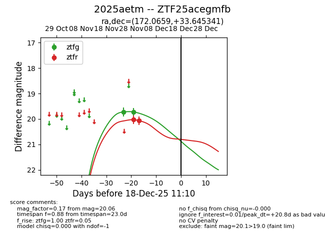
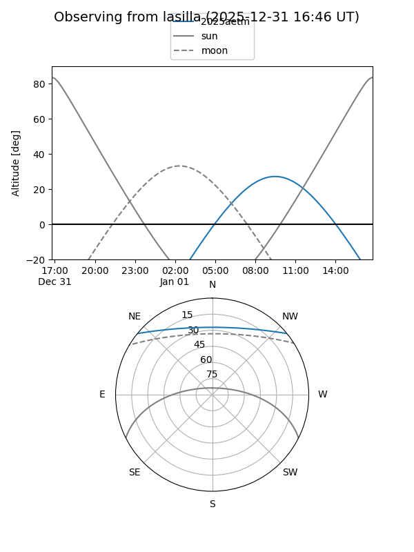
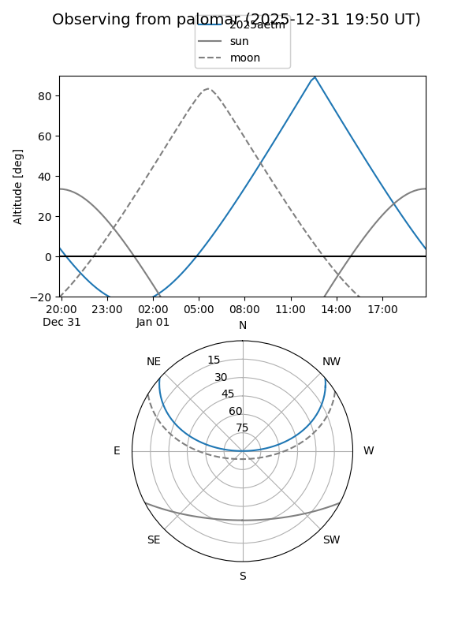
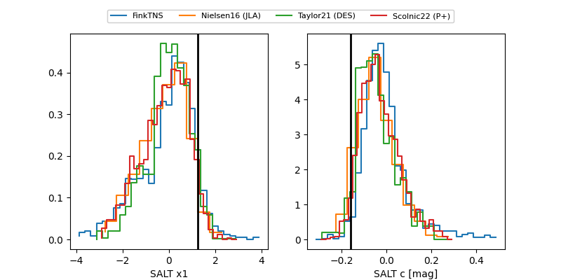

2025aetm
Target 2025aetm at 2025-12-18 11:17
Aliases and brokers:
FINK: fink-portal.org/ZTF25acegmfb
Lasair: lasair-ztf.lsst.ac.uk/objects/ZTF25acegmfb
ALeRCE: alerce.online/object/ZTF25acegmfb
TNS: wis-tns.org/object/2025aetm
YSE: ziggy.ucolick.org/yse/transient_detail/2025aetm
alt names
ZTF25acegmfb (ztf,fink_ztf)
2025aetm (tns,yse)
Coordinates:
equatorial (ra, dec) = 172.0659,+33.64534
equatorial (HMS+DMS) = 11:28:15.81,+33:38:43.23
galactic (l, b) = (187.8659,+70.95800)
Photometry
last ztfg=19.72, ztfr=20.06
2 ztfg, 2 ztfr detections
Lightcurve

Visibility


Additional plots
